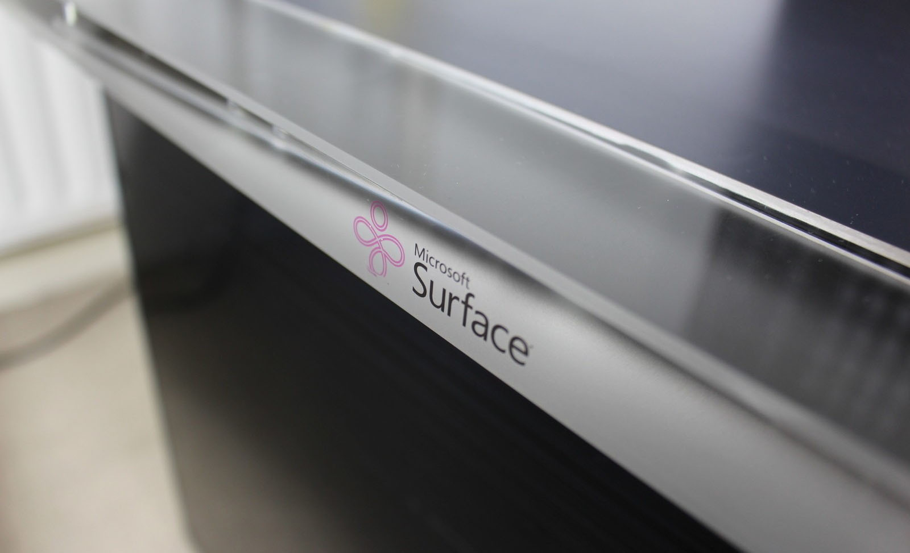
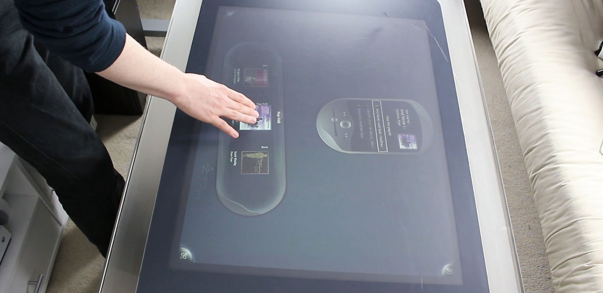
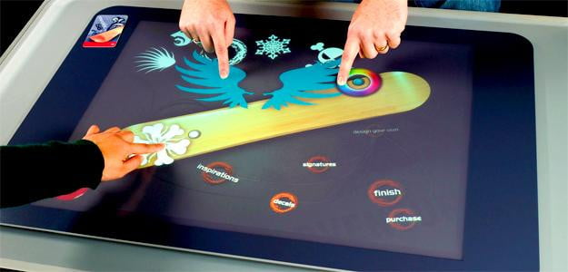
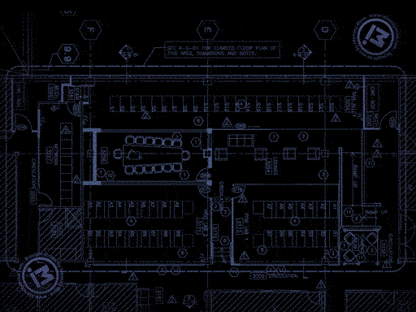
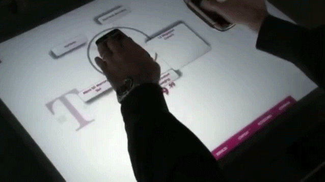
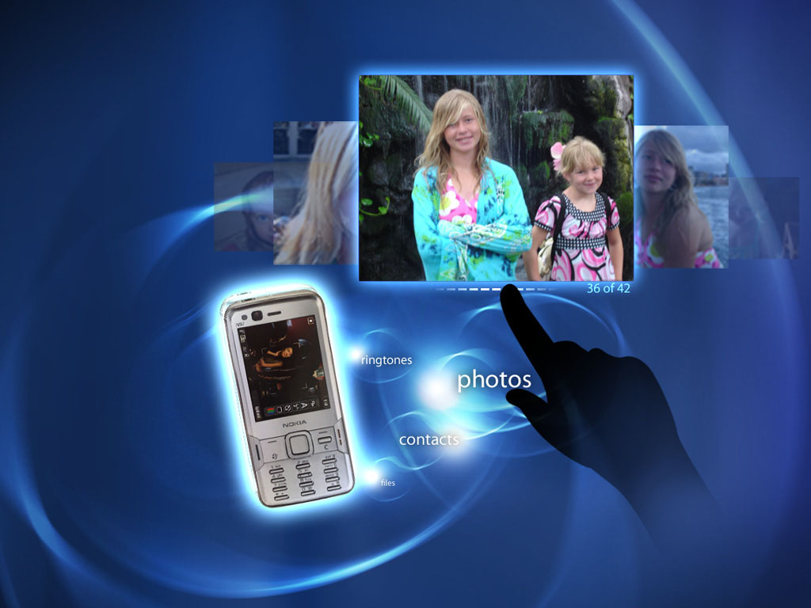
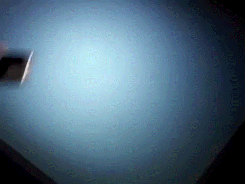

When Apple introduced the iPhone, Microsoft's natural user interface (NUI) technology was still in its early research stage. With Apple being the first to market with multi-touch user interfaces, all eyes were on Microsoft's response.
Microsoft relied on my organization to produce libraries, proofs-of-concept, keynote showcases, and technical demos to fast-track their NUI story. Ultimately, the patterns and conventions we established and even some of the code we wrote formed the basis for Microsoft's Surface hardware platform today.
Five years before the tablets and laptops that carry the Surface brand we know today, Microsoft produced an interactive coffee to facilitate research into natural user interface behavior, developing gesture libraries and forming the basis for a future mass-market consumer story. Microsoft retired the table form factor once they released the Surface Pro in 2013, shortly after rebranding it "PixelSense" to disambiguate it from the consumer desktops, tablets, and laptops that would carry the brand name.
The Surface table retailed for about $10,000, so Microsoft primarily sold the device to commercial customers rather than home users. Consequently, the nature of our early work in developing applications for Surface focused on installations in public settings like retail stores, restaurants and hotel lobbies.
The original Surface is unlike any other device we had ever designed for in several ways. Every other screen-based interface we're familiar with has a distinct top and bottom. In contrast, a coffee table is omnidirectional – usable from any side with no sense of top and bottom in the interface. Plus, because of the size of the display, it invited more than one person to use it at a time, often strangers. This created unique design challenges that lead to deeply insightful user research sessions.
Microsoft even used an application we designed and developed in their Enterprise Engagement Center, a research facility for large-scale cloud services.
Another aspect that made Surface unique was that its touchscreen used a camera array rather than a capacitor — it was actually "looking" at the screen from the inside. This technology made for some fascinating interaction opportunities through object recognition.
We designed the mechanism that blurred the distinction between the physical and digital realms, creating interactions that seemed like magic at the time.
In addition to the interactions, we also invented the way Surface connected to other devices via optical means, long before Near Field Communication (NFC) was mature enough to initiate a Bluetooth connection. Finally, we wrote the C# and Java libraries that powered these interactions.
We consider ourselves privileged to have helped develop a technology platform as unique as Surface. While very few people had the opportunity to experience the original Microsoft Surface themselves, we find deep satisfaction in the knowledge that my research, designs, inventions, and libraries live on today in Microsoft's ongoing natural user interface story.
"Jason is unquestionably one of the rarest people in the industry. Not only can he develop well structured solutions, but he has astounding ability in analysis and design. That, combined with his deep graphical design background, makes him near perfect for UX projects."
Together, we can create applications that launch startups, platforms that power ecosystems, or experiences that transform enterprises. Let's make something amazing.